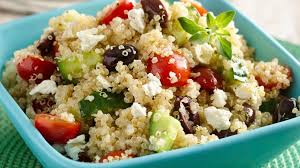
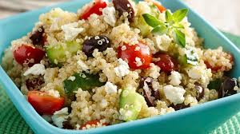
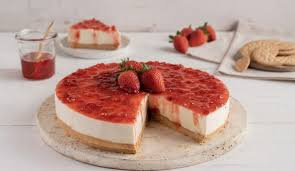
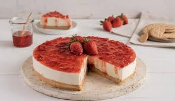

Recetas Generales
Descubre recetas tradicionales y modernas, fáciles de preparar y llenas de sabor. Encuentra consejos, ingredientes accesibles y pasos claros para sorprender a tu familia y amigos en cualquier ocasión.
Misión |
Visión |
Objetivo |
Nuestra mision es crear una plataforma de comer con la gente que amamos, dandoles recetas faciles y deliciosas. |
Nuestra visión es ser la comunidad de cocina en línea más grande y acogedora, donde todos se sientan inspirados para cocinar y compartir. |
Nuestro objetivo es ofrecer recetas accesibles y deliciosas que fomenten la conexión entre amigos y familiares. |
 
